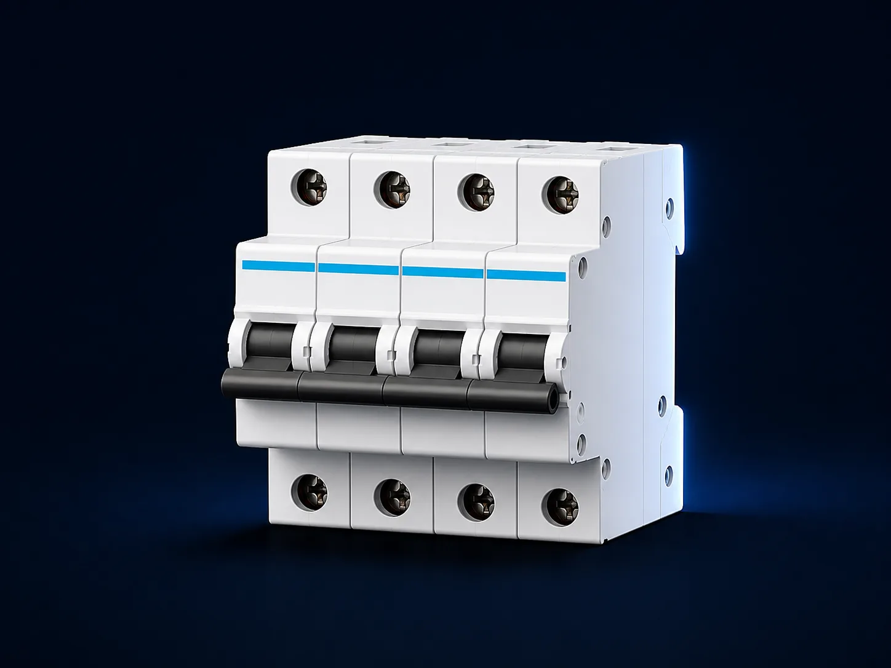

01 / FINAL CIRCUIT
Miniature Circuit Breaker
ST-MCB1P–4PDIN railModular
Compact overcurrent protection with clear state and accessory-ready geometry.
CurvesB / C / D concept
UseResidential / Commercial
AccessoriesRoadmap item
ReferenceST-MCB-[P]-[A]-[C]